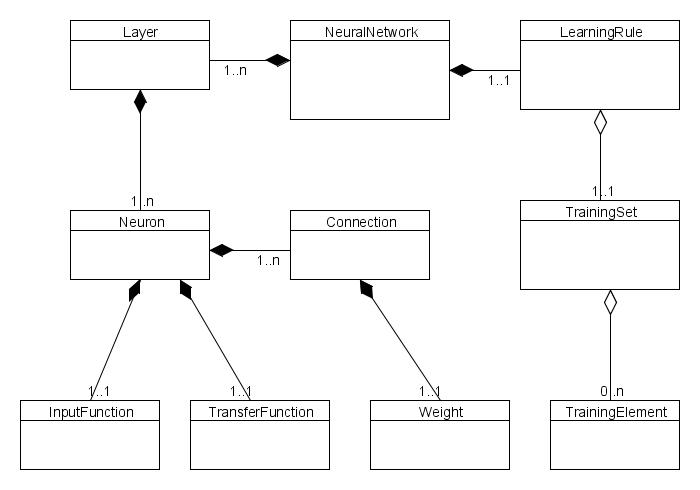

Basic classes in Java Neural Network Framework Neuroph correspond to basic concepts in neural networks:
| NeuralNetwork | The NeuralNetwork class is the base class for all artificial neural networks. |
| Neuron | The Neuron class represents basic artificial neuron according to McCulloch-Pitts neuron model (basic general neuron model). |
| Layer | The Layer class represents layer (collection) of neurons in neural network. |
| Connection | The Connection class represents weighted connection to another neuron. |
| Weight | The Weight class represents neuron connection weight. |
| InputFunction | The InputFunction class represents the neuron's input function. |
| TransferFunction | The TransferFunction is abstract base class for all neuron tranfer functions. |
| LearningRule | The LearningRule class is the base class for all neural network learning algorithms. |
All classes are in org.neuroph.core package. For more details look at the provided Javadoc API.
